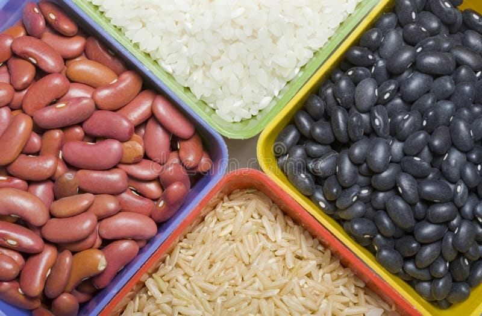

DESPERDÍCIO DE ALIMENTOS
Segundo a FAO, cerca de 14% dos alimentos são perdidos antes de chegar aos mercados varejistas em todo o mundo. Pelo lado do varejo e consumidor, estima-se que 931 milhões de toneladas, ou 17% do total de alimentos adquiridos em 2019, foram para o lixo das residências, supermercados, restaurantes e outros serviços alimentares, segundo dados recentes da ONU Meio Ambiente.
As perdas de alimentos estão localizadas nas fases de produção, armazenamento, embalagem e transporte enquanto o desperdício faz parte das etapas de varejo e consumo. O compromisso do Brasil com a segurança alimentar e nutricional envolve o árduo trabalho de redução de perdas e desperdício de alimentos ao longo da cadeia de produção e consumo, cujo enfrentamento requer o desenvolvimento e transferência de soluções tecnológicas, políticas públicas robustas alinhadas à economia circular, e ações de educação e comunicação para mudança comportamental.
A redução das perdas e do desperdício de alimentos também significa gerar novas oportunidades de negócios. O desenvolvimento de políticas e o fomento às iniciativas públicas e privadas podem acelerar a revolução da economia circular por meio da inovação tecnológica e assim fortalecer a segurança alimentar e o desenvolvimento econômico do Brasil.
RECICLAGEM DE ALIMENTOS
É muito importante que nós façamos de tudo para que o indice de derperdício de alimentos diminua, já que muitos brasilkeiros ainda passam fome em todo o pais.
As vezes em nossa própria casa mesmoo, jogamos fora alimentos que poderiam se tranformar em um outro tipo de prato, mas as vezes não damos a devida importáncia para isso e acabamos jogando fora um resto de comida que poderia se tranformar em um outro delicioso prato.
RECICLAGEM DE ALIMENTOS: O QUE PODE SER FEITO COM RESTOS ALIMENTÍCIOS?
Quase todo mundo já levou bronca dos pais por deixar comida no prato, um desperdício que geralmente é visto como inocente ou insignificante. Hoje em dia, porém, há uma conscientização maior de que qualquer tipo de desperdício deve ser evitado para que não haja prejuízo aos recursos naturais e ao futuro da humanidade. Atualmente, descartar uma casca de laranja ou limão, uma casca de ovo e até restos de comida pode ser considerado um desperdício de recursos. Isso porque esses são excelentes ingredientes para a compostagem orgânica, que resulta na formação de adubo. Além disso, muitos desses itens podem ser reaproveitados para fazer receitas deliciosas, como um pudim com cascas de goiaba ou um doce de cascas de laranja.
O QUE PODE SER FEITO COM RESTOS DE ALIMENTOS?
A gaúcha Raquel Patro, especialista em jardinagem e paisagismo, criou seu próprio método para transformar restos de alimento em nutrientes para as plantas. Ela armazena cascas de frutas — como banana, laranja, abacaxi e mamão —, além de cascas de cebola, ovos, borra de café e outros materiais orgânicos. Para evitar o mau cheiro do material em decomposição, a especialista expõe os restos ao sol, de modo a enxugar a água. Em seguida, ela bate todo o material em um liquidificador, processo que dá origem a uma farinha altamente nutritiva para as plantas. Segundo Raquel, esse processo preserva os nutrientes, como o potássio das cascas de banana e o cálcio das cascas de ovo. A gaúcha armazena a farinha em uma sacola plástica, que é mantida ao abrigo da luz, do calor e da umidade, mantendo seu valor nutritivo por muito tempo. Esse composto é usado para fertilizar as plantas. Segundo Raquel, essa prática para fazer reciclagem de alimentos é muito bem vista pelas plantas, que acabam exibindo uma aparência muito melhor em relação àquelas em que o produto não é usado.
OUTRAS FORMAS DE RECICLAGEM DE ALIMENTOS
Você sabia que cascas de laranja e limão podem ser usadas para espantar mosquitos? Para isso, basta substituir o tablete convencional do aparelho repelente por pedaços de casca dessas frutas. Apesar de todas essas ideias, a melhor forma de se fazer a reciclagem de alimentos ainda é por meio da compostagem orgânica, processo que converte resíduos orgânicos em adubo. O procedimento consiste no armazenamento de resíduos orgânicos em uma composteira, formada por um conjunto de três caixas plásticas contínuas — sendo as duas primeiras furadas, para dar passagem ao líquido e permitir o trânsito das minhocas entre as caixas, e a terceira fechada e com uma torneirinha por onde é retirado o adubo líquido.